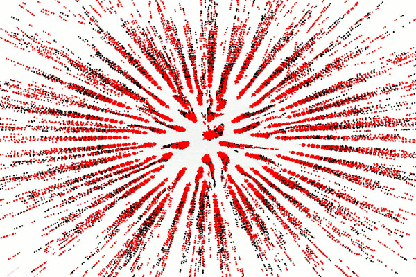
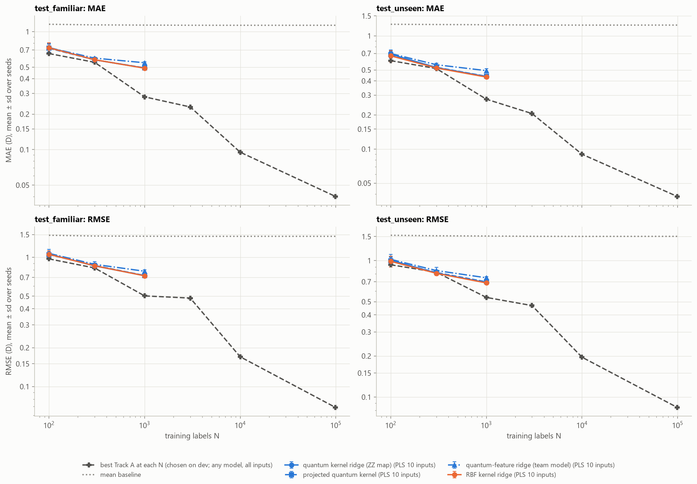

Douglass Jeffrey
Applied Mathematics and Computer Engineer - Ontario, Canada
Email |
GitHub |
LinkedIn
About
I study Applied Mathematics and Computer Engineering at Queen's University. Some of my interests include algorithmic optimization, computer architecture and hardware design. This is a portfolio of some of my projects.
Projects

Designed a GPU-accelerated algorithm for simulating the graphed Pólya contagion process on scale free networks with tens of millions of nodes. Optimized the algorithm for performance and scalability on available hardware. Comparing different intervention strategies to optimize cost while achieving consensus.
GitHub, Thesis

Designed a variety of quantum machine learning algorithms for regression tasks, comparing them against their classical machine learning and statistical learning counterparts. We came second place in the competition.
GitHub,
Presentation
Earlier projects
-
GuardDrive (QHacks 2023)
A CNN built with TensorFlow/Keras that detects distracted driving from a laptop camera feed. 96% accuracy on the test set.
-
Drawn Number Classifier
A TensorFlow model trained on MNIST (97% test accuracy) with a little Pygame app so you can draw a digit and have it guessed in real time.
Last updated October 2026.